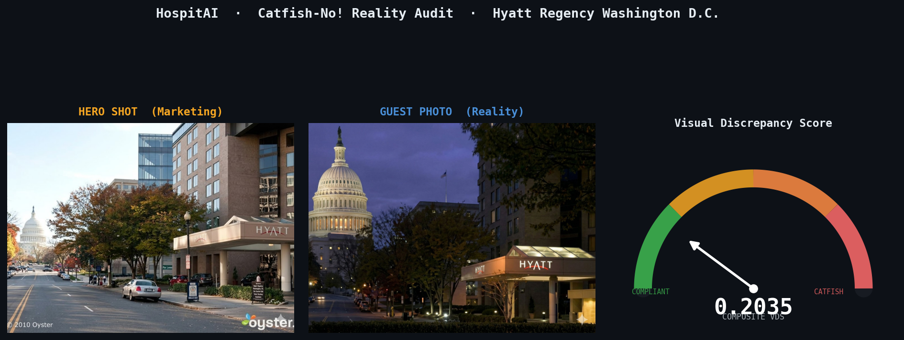
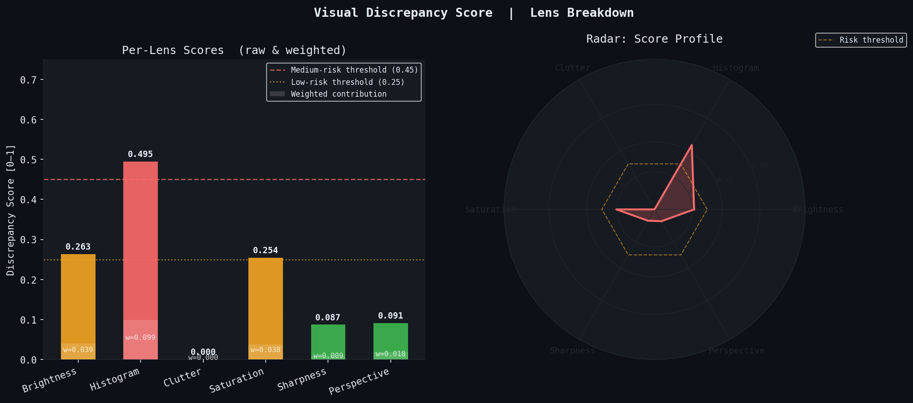
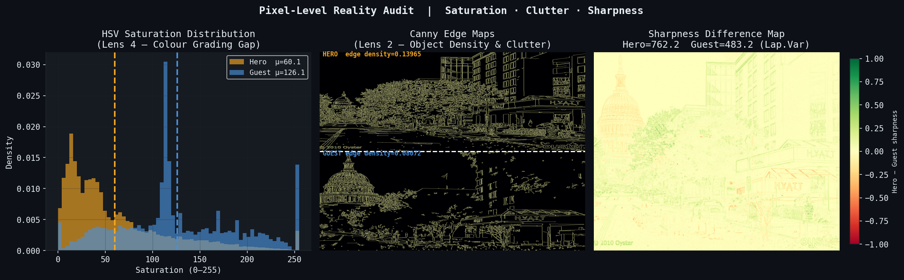
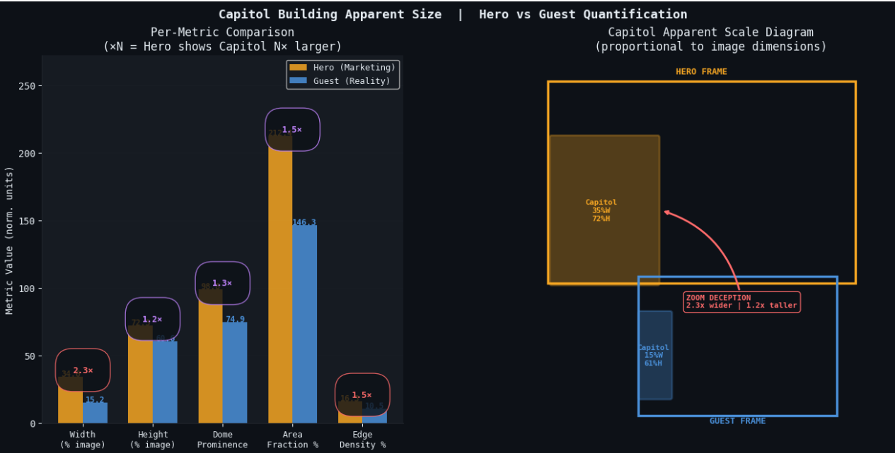
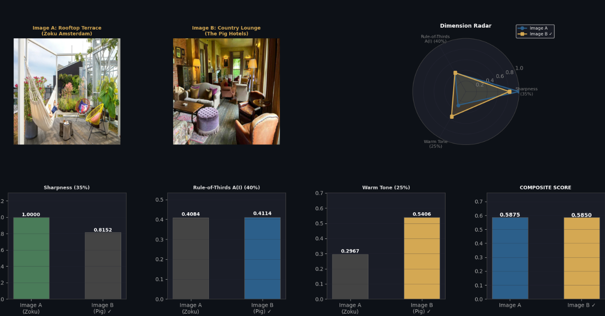

"Catfish-No!" — a multimodal reality-auditing framework that quantifies the gap between a hotel's marketing photos and guest-uploaded reality, and flags maintenance issues automatically from guest photos, so operators fix the right thing before it becomes a 1-star review.
Client scenario: UrbanStay Collective, a simulated 50+ property hotel group. Star ratings look "okay," but growth is stagnant — and a single average score can't tell you which amenity is causing pain, or whether the problem is a Marketing Gap (ads oversell reality) or a Service Gap (the room is fine, the service isn't).
Hero shots promise bright, spacious, landmark-adjacent rooms — guests arrive to something visibly different, and trust erodes before check-in even finishes.
The room matches the photos, but staff, noise, or check-in friction is the real driver of dissatisfaction — a completely different fix than "reshoot the brochure."
Synthetic dataset across 8 UrbanStay properties (hotel, city, date, verified stay, rating, text) with a seeded "dark rooms / dark bathrooms" trend to prove early-warning detection works.
Turn messy, multimodal guest feedback — text, photos, metadata — into an actionable signal: what to fix, where, and how urgently.
No single data source tells the whole story. HospitAI combines text sentiment, visual evidence, and review metadata into one early-warning system.
The core image-processing pipeline computes a Visual Discrepancy Score (VDS) between a hero marketing photo and a guest-uploaded reality photo across six analytical lenses, then blends them into a single 0–1 risk score.
| Lens | Weight | OpenCV Technique | What It Catches |
|---|---|---|---|
| Brightness | 15% | Grayscale luma mean & std-dev gap | Under/over-lit staging |
| Histogram | 20% | Per-channel histogram correlation | Tonal / time-of-day mismatch |
| Clutter | 20% | Canny edge density | Object density & mess differences |
| Saturation | 15% | HSV saturation-channel gap | Colour-grading & filter deception |
| Sharpness | 10% | Laplacian variance gap | Focus / staging quality gap |
| Perspective | 20% | ORB keypoint scale ratio | Zoom-lens landmark deception |
Case study — Hyatt Regency Washington D.C.: hero shot is a daytime street photo; guest photo is a twilight shot from the same corner.



The discrepancy is driven by time-of-day photography (day vs. night), not spatial manipulation — the model's recommendation was to add a twilight hero shot to the listing rather than penalize the property.
Alongside the pretrained MobileNetV2 classifier (below), the team hand-built a tiny 3-layer CNN with no pretraining so every activation stays interpretable — purpose-built to detect "the Capitol looks closer in the ad than it really is."

Guest photos ("furniture was trashed") are classified into four maintenance-severity tiers via transfer learning on MobileNetV2, with Grad-CAM heatmaps showing exactly which pixels drove the prediction — implemented independently in both PyTorch and TensorFlow/Keras to compare production trade-offs.
register_full_backward_hookNormalize(mean, std) → ~[-2, 2]tf.GradientTape() context managerpreprocess_input → [-1, 1]model.fit() or custom looptf_model.get_layer('out_relu') throws ValueError: No such layer. Fix: walk the base sub-model in reverse with a find_last_conv_layer() helper to auto-detect the correct target Conv2D/DepthwiseConv2D layer, then build the gradient sub-model from the base model directly instead of the wrapper.Not every guest photo is a liability — some are better than the current marketing shot. A weighted composite score (Sharpness 35% · AI-scored Rule-of-Thirds composition 40% · Warm-tone color grading 25%) flags user-generated content worth promoting to paid ad spend.

Every signal — text, image, metadata — flows through one modular pipeline so a single Gap Detection layer can decide what's a Marketing Gap, a Service Gap, or genuinely compliant.
Daytime hero shot vs. twilight guest photo, both featuring the U.S. Capitol
Aesthetic audit — rooftop terrace vs. country-house lounge, both guest-submitted
The 8,000-review dataset was generated for the prototype with a seeded trend to prove detection works — production deployment would need validation against real UrbanStay review data.
The four-tier severity classifier relies on MobileNetV2's general visual features rather than a hotel-damage-specific labeled training set — real deployment needs annotated maintenance photos.
The VDS and aesthetic-audit results shown here are single illustrative pairs (Hyatt, Zoku, The Pig) — the scoring weights would need calibration across many more property pairs before being trusted at scale.
VDS and severity scores are designed as prioritization signals for a human marketing/ops reviewer — not as an automated system that reshoots photos or penalizes properties without review.
"We stop selling a deceptive room and start selling a verified, high-truth experience — bridging the gap before it becomes a 1-star review."